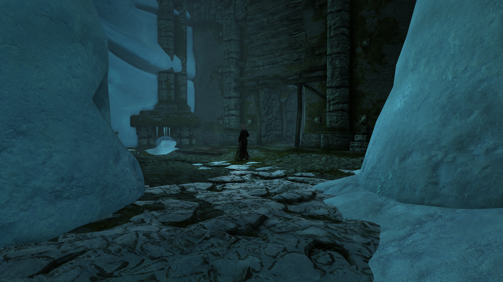
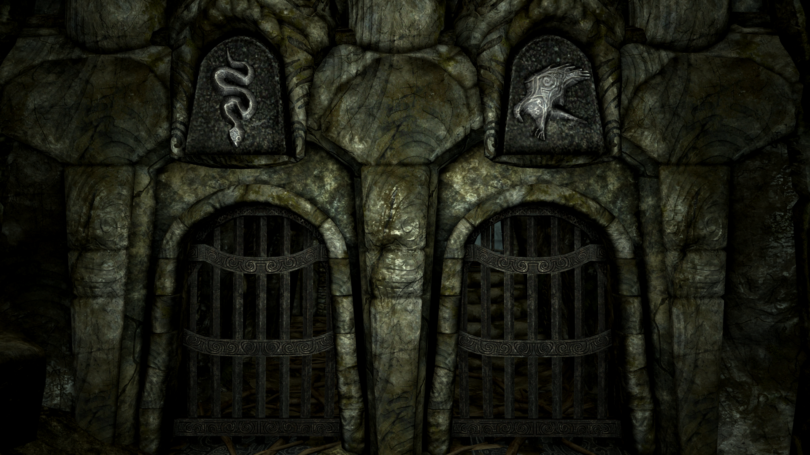
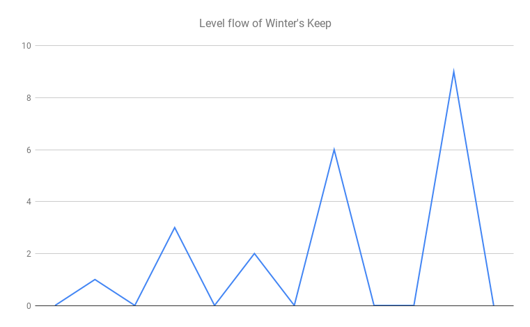
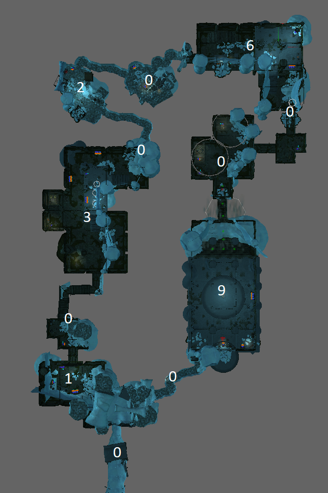
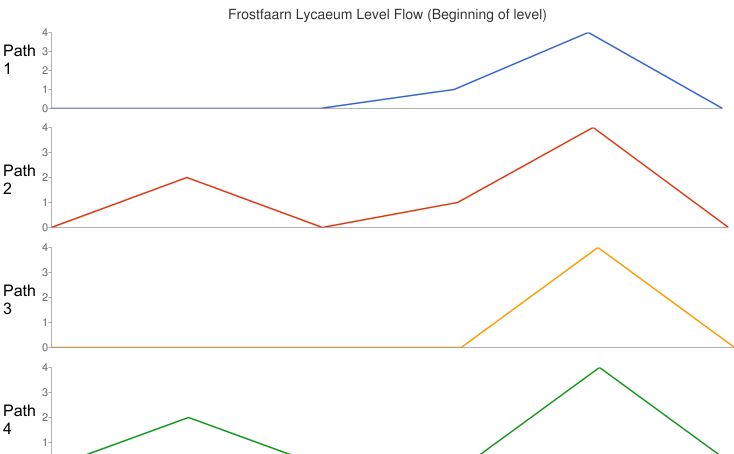
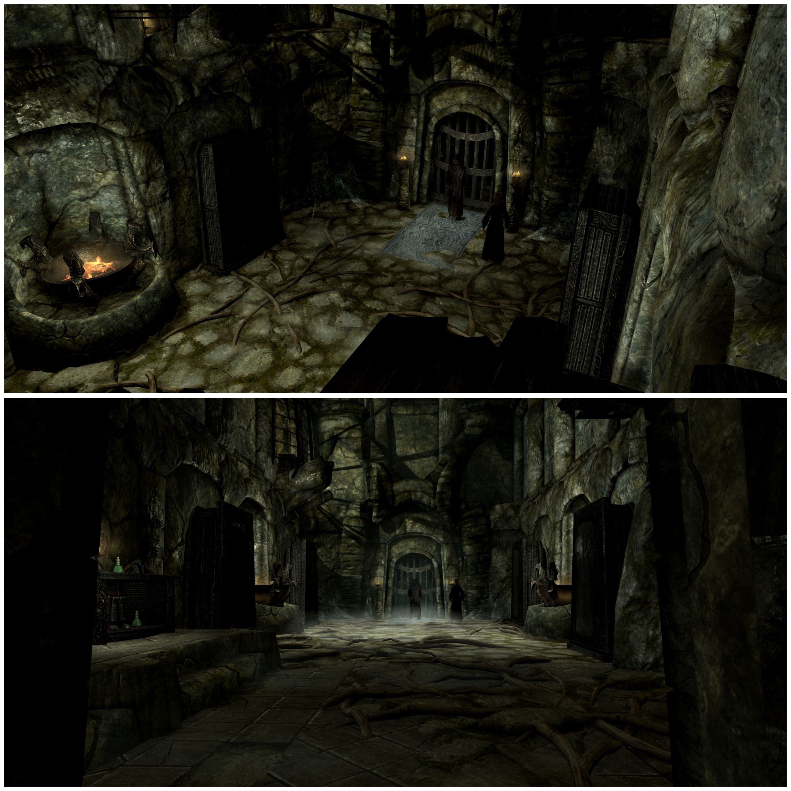

From a modder to a level designer: Player Agency and Level Flow
(Originally posted on 03.02.2019)
I have modded games for my own pleasure ever since I realized I could edit the XML-files of Civilization 3. As I have grown older, I have started to enjoy modding games more than actually playing them. Alongside modding I have also started to dabble into game design. Eventually this shift from playing to building prompted me to challenge myself: could I learn to build stuff for other people to enjoy?
Adding new content to games and level building has always been one of my favorite aspects of modding, so I decided to focus on level design. I set myself the goal of growing from a modder into a level designer and started reading and watching everything related to level design I could find. Then I started applying what I learned into new levels.
I built levels for Elder Scrolls V: Skyrim, so their context is an open world single player RPG. I made four mods but ended up abandoning and remaking my first mod as I was not happy with it. This "failure" was the single biggest learning experience for me as it helped me to unlearn my preconceptions about level design.
I eventually made three mods with four levels I was content with: Winter's Keep, Snowgaard, Frostfaarn and Frostfaarn Lycaeum. The biggest level design lessons I learned from making these mods, reading half a dozen game/level design books and watching few dozen GDC talks can be generalized into two topics: player agency and level flow.
Player Agency
With player agency I mean giving the player the ability to plan and execute.
In a level design context this means allowing the player to decide what she does with predictable outcomes. For example, when a player enters a room you usually want to show her what the challenge is and where the reward is. When the player has this information, she can then decide herself how to deal with the challenge.
The lighting and ice on the floor draw the attention towards the challenge, a hostile conjurer, and the reward, a door to continue the level
As a rule of thumb, I feel that the more player agency you empower, the better. This, however, depends on the level you are building and on what kind of an experience you are trying to convey. Thus player agency is not the goal but rather a paradigm.
As I am designing a level, I constantly use player agency as my perspective into the level. How much player agency I want to empower? How apparent the challenge and the reward are? Perhaps in this room the player wont have the ability to plan and instead of acting on the level must react to it?
In order to empower the player, we must communicate information about the level to the player. Here we come to the raw principles and common patterns of level design. How to use lighting to draw the players attention? How to use “nothing” as a contrast? How use our human tendency to mentally construct and match patterns? How to inform the player without the player realizing it? This information is rarely explicit and the challenge for the player might be to understand the information required to solve the problem.
Which route would you take?
Player agency highlights the fact that a level is not its layout nor its quest nor the monsters that dwell inside. The level is what the player does in the level.
Level Flow
When I start working on a new level, one of the first things I design is it’s flow. It looks something like this:
0-1-0-3-0-2-0-6-0-0-9-0
As a chart the same flow looks like this:
The above chart is the level flow of Winter’s Keep. A number represents a part of the level - usually a room - and the value of that number tells how big of a challenge the room contains. This flow together with aesthetics and lore determine the layout of the level.
The level flow mapped to the level layout
When I design the flow I usually have two rules of thumb. First of all, I always have zeroes. These are the sections which give the player the chance to catch her breath and plan. Secondly, the challenge should always rise towards the end. Not necessarily in linear fashion, but usually the best choice is to save the most difficult challenge last.
One thing to note about this approach is that, it can make the levels rather predictable. With Winter's Keep and Snowgaard, I wanted to create linear and straight-forward experiences so this predictability was a deliberate design choice. I also feel that this kind of “high level predictability” improves player agency. As the player has a rough understanding how hard the challenges will be, it is easier for her to plan.
Not all levels should follow this pattern. It is a good default but one should also occasionally break it to surprise and challenge the player. With levels Frostfaarn and Frostfaarn Lycaeum I made an explicit design choice to be less linear and provide different paths to pass through the levels. Depending on what choices the player made, the level flow changed accordingly.
I used two patterns to achieve this "dynamic" level flow. First of all, I made some parts of the level optional. The player simply did not have to pass those sections to finish the level. Secondly, I gave many of the rooms two different entry points.
The more obvious entry point usually meant a more difficult challenge and the more hidden entry put the player in a more advantageous position. Information about these more advantageous entry points was usually more hidden and obscure and required the player to have more attention to detail.
If you chose the Eagle you enter the room from a higher point and if you chose the Snake you enter the room the ground level
With level flow it is important to remember that it is always the “designer’s path” and the players will always walk their own. Level flow is not the experience of the player, but a tool for the designer.
Outro
So did I level up from a modder into a level designer? I think so. I still don't have the tools to build the most grand levels and I need more work on exterior spaces but I feel the quality of my levels is at least very to close to professional level. Also the biggest change (and surprise) was how much faster I became. My fourth mod Frostfaarn was twice the size of my second mod Winter's Grasp. Yet Frostfaarn took only one fifth of the time it took me to make Winter's Grasp.
By no means player agency and level flow were all I learned. I learned a lot on how to use lore in level design, how to use contracts in a level design context, how and when to prototype and iterate and so on. Naturally much of what I learned will change and evolve. To which direction, depends on whether I continue on building levels for Skyrim or will I challenge myself and build levels for a different game, or even a genre? Or perhaps I will venture more into game design as it's principles have much in common with level design.